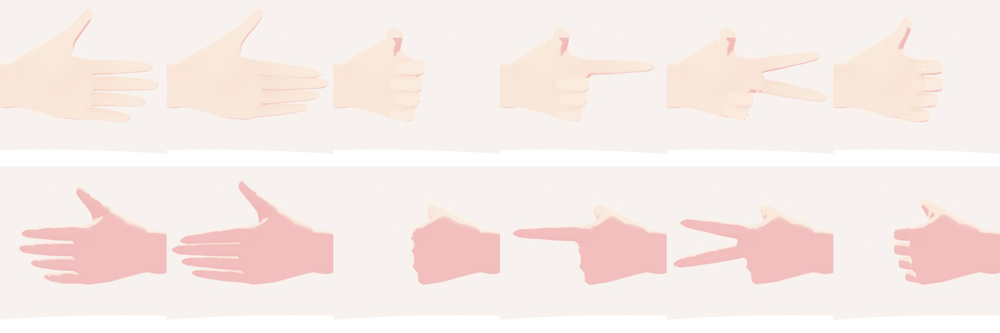
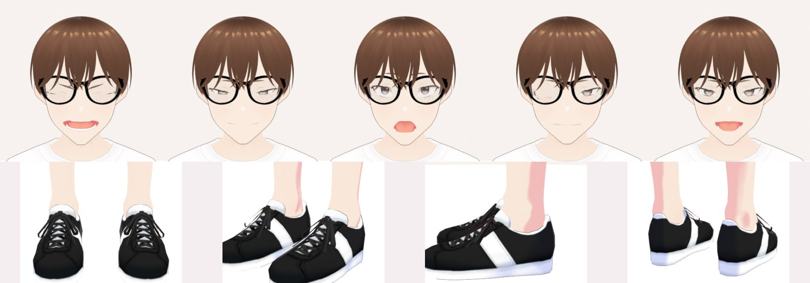
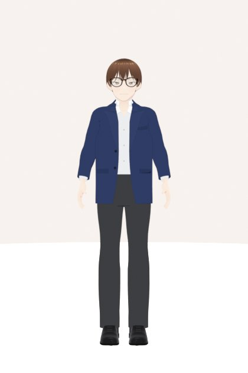
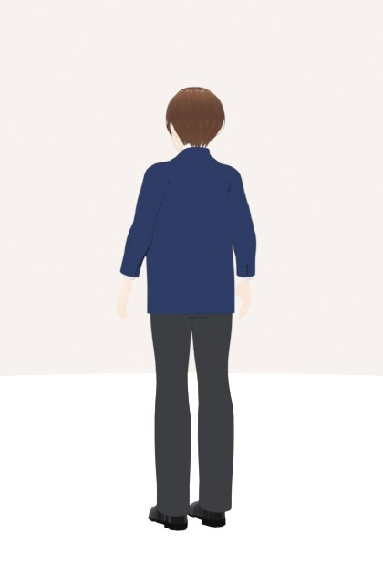

路人甲：婚禮賓客
開場影片 V12 第 5 幕「舉手機拍照、擋住鏡頭」的路人甲。VRoid 男性基底、棕色鍋蓋短髮、黑框眼鏡，臉和服裝都刻意和新郎、新娘不一樣。在 Blender 補完身體、測 6 個會用到的基本動作、做海軍藍西裝。
身體完成度：臉、身體、下身、雙手、雙腳
這個角色用 VRoid 男性基底（M00），身高 170 cm，沒有照片、不像任何真人。VRoid 匯出時把 T 恤底下看不到的皮膚刪掉了（胸口、上背、肩膀）。路人甲的襯衫領口是敞開的，V 字裡看得到上胸；動作測試也是拿「手」去量「身體皮膚」，所以補回來。實量這個角色的腰腹截面，和新郎差不到 2 mm（兩人都是 VRoid 男性預設身體、只差身高），所以直接沿用新郎專案量好的補皮膚形狀，再讓角色轉一圈檢查。
全身 360°
角色自己轉、燈光固定，所以背面也打得到光，看得清楚接縫。
臉部 360°
轉到一半會眨一次眼，順便確認眼皮表情正常。
做了什麼
- 軀幹：補回胸口、上背、肩膀的皮膚（男性，不做胸部）。正面胸口、鎖骨自然；轉到背面平滑，沒有凸起或階梯。
- 肩膀與領口：補丁一律收進 T 恤內側 5 mm，穿 T 恤時正面、背面、手放下都沒有皮膚從領口或肩膀戳出來。
- 上臂：沿用原本手臂的真實截面往肩膀放大。接縫處有一點色差，但位置在 T 恤袖子和西裝袖子裡面，兩套衣服都看不到。
- 便服：男性不做平口小可愛，直接穿 VRoid 原本的白色圓領 T 恤、黑色及膝短褲、黑白球鞋。
- 臉：VRoid 預設臉調成男性五官，棕色鍋蓋短髮、黑框眼鏡（VRoid 配件），和新郎、新娘都不一樣；5 種表情、眨眼都檢查過，眼鏡跟著頭轉。
- 手和腳：手勢圖 6 種（掌心、手背各一張）；腳 4 個角度，鞋底貼地，每個動作都自動貼地。
手勢（上排：掌心；下排：手背）

從左到右：放鬆、張開、握拳、指、比 YA、握持。
表情與腳

9 種動作測試
每個動作都會循環播放。檢查分三項：手或前臂有沒有穿進身體、頭或另一隻手；腳底有沒有陷進地板或浮在空中；身體骨頭每格最多轉幾度（超過 15 度看起來就會跳）。頭髮有物理擺動。
- 穿模
- 0 mm
- 最大轉速
- 0.4°/格
- 腳底
- 貼地
- 長度
- 2.0 秒
雙腳踩住不動（腳底鎖定）：重心在兩腳間輕輕左右移、骨盆微側傾、呼吸、眨眼
- 穿模
- 0 mm
- 最大轉速
- 3.7°/格
- 腳底
- 貼地
- 長度
- 3.0 秒
女性版雙手上下交疊（量到約 1.4 mm 的手碰手）；男性版手貼在大腿外側
雙腳原地不動，從髖關節前彎約 35°、臀部自然後移、頭跟著低下，停一下再慢慢起身。女性雙手上下交疊放在小腹前；男性背打直、幾乎全從髖關節彎，雙手併指、掌心朝大腿，整段貼在大腿外側的褲縫上，只沿著褲縫往下滑（看 project.json 的 gender，沒有就看 body.bust）
- 穿模
- 0 mm
- 最大轉速
- 2.4°/格
- 腳底
- 貼地
- 長度
- 2.0 秒
- 穿模
- 0 mm
- 最大轉速
- 5.9°/格
- 腳底
- 貼地
- 長度
- 2.0 秒
原地走（跑步機式），支撐腳每格自動貼地
- 穿模
- 0 mm
- 最大轉速
- 11.2°/格
- 腳底
- 貼地
- 長度
- 3.0 秒
轉到背面再轉回來，頭先轉、身體跟上
- 穿模
- 0 mm
- 最大轉速
- 8.1°/格
- 腳底
- 貼地
- 長度
- 3.0 秒
真的往前移動（不是原地踏步）：站姿出發 → 換步 → 最後一步併腳站好，可以接 place(idle)。著地腳釘在地上不滑，腳跟抬起時繞鞋尖轉、落地時繞腳跟轉。預覽版朝 +X 走 0.9 m、4 步、3 秒；距離、步數、秒數、方向、出發點都能用參數改。新娘穿蓬裙時用 arms='skirt'（手輕捏臀部高度的裙面），自然擺手的版本手會穿進蓬裙。2026-10-06 改上半身（使用者說新郎走路像機器人、手掌張開、側面胸口很挺）：手臂改成照步伐連續擺（鐘擺式、和腳反向；舊版用兩腳前後差，腳站著時手臂停住，一段一段頓），往前擺時手肘多彎（16°→34°）、手指改 walk_relax（放鬆微握，舊版 relax 幾乎張開）、手腕幾乎打直；肩膀和腰反向小扭轉（胸 ±5.5°、腰 ∓1.5°），頭轉回來保持朝前；走路時上身整體前傾約 4°、上背微圓，頭在骨盆前 2 cm（舊版在骨盆後 1 cm，VRoid 站姿本來就在後 3 cm，看起來像挺胸）；骨盆上下起伏 6 mm → 9 mm。頭尾站著那幾格的軀幹和舊版相同；手臂、手指換成新的放鬆姿勢（接 idle 時淡入就會換回 idle 的手）。腳的部分（換步、位置、秒數）沒改，同一組參數走出來的位置與格數和舊版一樣
- 穿模
- 4 mm
- 最大轉速
- 14.7°/格
- 腳底
- 貼地
- 長度
- 1.3 秒
雙手捏著手機左右兩邊，手指在手機背面互相碰到：手對手 3.8 mm（門檻 5 以內）。手機不在檢查範圍
單次動作 1.3 秒（路人甲）。從畫面右側往左快走 2 步（0.06～0.54 秒，真的往前移 0.5 m；腳離地才水平移動、任何時刻至少一腳踩地，不滑）→ 0.48～1.22 秒原地換三步轉身面向新人（背對鏡頭）：腳轉 65%（58°），其餘 32° 由骨盆以上扭過去 → 0.16～0.92 秒邊走邊用雙手把手機舉到臉前 25 cm（直拿、不舉過頭）→ 1.0 秒按快門（手機往前一點、頭微點）→ 拿著到結束。腿直接寫 FK（_leg_set），沒有用 walk／turn（那兩個有舊的滑步問題）
- 穿模
- 4 mm
- 最大轉速
- 14.1°/格
- 腳底
- 貼地
- 長度
- 0.8 秒
右手掌貼後腦勺右上方的頭髮（離頭髮 6 mm，跟著頭骨算），手指朝上、指尖超出頭頂一些；穿模 0。近照四個角度看過：從背後看手按在後腦右上方，從正面看比較像「手放在頭頂後側」，不是整隻手埋進後腦勺的頭髮。手對手 3.8 mm 是開頭雙手還拿著手機那幾格
單次動作 0.8 秒（路人甲），接 walk_in_photo 結尾：0.02～0.62 秒右手離開手機、左手把手機放到胸前 → 0.02～0.52 秒上身往右扭、回頭看老相機（共轉 100°：骨盆 20°、胸腰 30°、脖子頭 50°，腳不動）→ 0～0.70 秒右手從右外側繞到後腦、0.66 秒起搓一下、苦笑 → 0.42～0.80 秒朝老相機方向快速小鞠躬 30°、縮肩 8°。結尾頭和胸口朝向畫面右側（出口），但腳還朝新人那邊（見 check_note）
- 穿模
- 0 mm
- 最大轉速
- 14.8°/格
- 腳底
- 貼地
- 長度
- 1.5 秒
單次動作，預設 1.5 秒（路人甲），接 oops_bow 結尾：0～1.4 秒右手離開後腦、往外劃開再放下到身側（之後跟著走路前後擺 ±10°），左手拿著手機留在胸前 → 0～1.28 秒換四步轉向出口（右腳兩步各轉 61°、左腳兩步各轉 55°、最後留 12° 外八；腳離地才轉，任何時刻至少一腳踩地）→ 同時縮肩 10°、低頭 10°、上身前傾 5°，第三步起快步往右（世界 +X）走；預設第五步 1.5 秒落地時，骨盆已經從 oops_bow 結尾的位置往右走了 0.67 m
海軍藍兩件式西裝（婚禮賓客）
沒有照片，照描述做的婚禮賓客西裝，刻意和新郎、新娘都不一樣。海軍藍單排兩釦外套，敞開不扣（劍領、左胸口袋、兩側有蓋口袋、袖口 4 顆扣）；白襯衫不打領帶，第一顆扣子打開：領口切成 V 字看得到上胸，兩片領尖往外攤開，敞開的外套裡看得到襯衫前襟的扣子。炭灰色直筒西裝長褲（和外套不同色，新郎是同色套裝），黑色綁帶皮鞋配深色襪子，保留 VRoid 的黑框眼鏡。和新郎的差別：沒有背心、沒有領結或領帶、領口敞開、外套 2 顆扣（新郎 1 顆）、顏色由米色換成海軍藍＋炭灰、鞋子由深褐色換成黑色。
服裝 360°
和照片對照


穿著服裝動起來
揮手、轉圈、跳躍：西裝跟著身體一起動（沒有布料模擬，下襬不會飄）；跳起來時看得到黑色皮鞋。
情境（0 段）
這一版還沒做情境；做好後短片會放在這裡。
這個專案還沒有情境。
還沒做到的
- 動作測試只做精簡版 6 個（站姿待機、原地走路、往前走、轉身、點頭、鞠躬）：路人甲在開場影片只出現約 2.5 秒。其他動作沒有量，網頁上會顯示「未檢查」。
- 「原地走路」「轉身」量到的滑步超過 5 mm（367、553 mm）：這是動作庫的舊問題，新郎、新娘的數字一樣，還沒修；網頁目前不顯示滑步。「往前走」量到 900 mm 是頭尾相接那一格從終點跳回起點，扣掉後實際每格 0.4 mm、累計 0.7 mm。
- 要用的兩個新動作（走進來舉手機拍照、尷尬抓頭鞠躬）還沒做，之後由動作庫擴充另外做。
- 西裝和新郎用同一套版型程式：剪裁、長度、口袋位置一樣，差別在顏色、背心、領結、領口與扣子數。
- 西裝沒有真的布料模擬，是跟著骨架變形：轉圈、跳躍時外套下襬不會飄起來。
- 襯衫領尖是兩片平的白色領片，沒有做出捲起來的厚度；後頸外套領子上方露出的白色襯衫領，上緣有一點細小鋸齒。
- 皮鞋是依腳的形狀程式做出來的簡化版（和新郎同款型、換成黑色），沒有縫線、鞋頭雕花；鞋帶是深灰色，在黑鞋上不太明顯。
- 頭髮、眼鏡沿用 VRoid 匯出的樣子，沒有另外調整；臉沒有特別捏，是 VRoid 預設臉調成男性五官。
- 動作測試用便服（T 恤＋短褲）渲染；另外用西裝渲染了「往前走」「鞠躬」兩段自我檢查（轉速 8.1／3.7°/格，在 videos/actions_costume/），確認外套下擺走路時不會被大腿頂破。